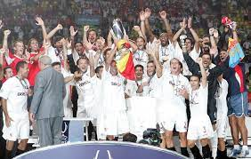

La supercopa de Europa
El Sevilla ha jugado 9 finales de la copa del rey de las cuales ha ganado 5 la primera la gano en 1935 contra el sabadel 3-0 doblete de campanal y gol de Bracero la segunda fue en 1939 contra el racing ferrol 6-2 hat trick de Campanal doblete de Pepillo y gol de Raimundo Blanco el tercero fue en 1949 ante el Celta de Vigo 4-1 no se dice de quienes fueron los goles la cuarta fue en 2007 contra el Getafe 1-0 goles de kanoute la quinta fue en 2009 contra el Atletico de Madrid 0-2 goles de Diego Capey y Jesus Navas